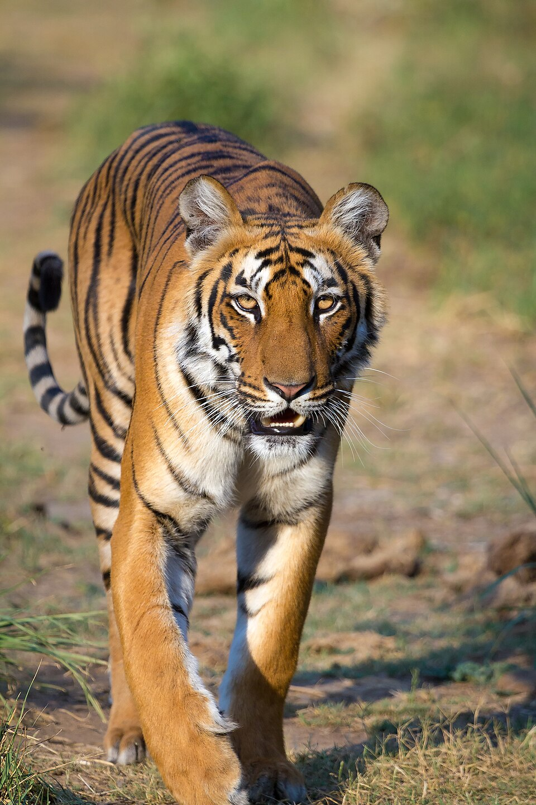
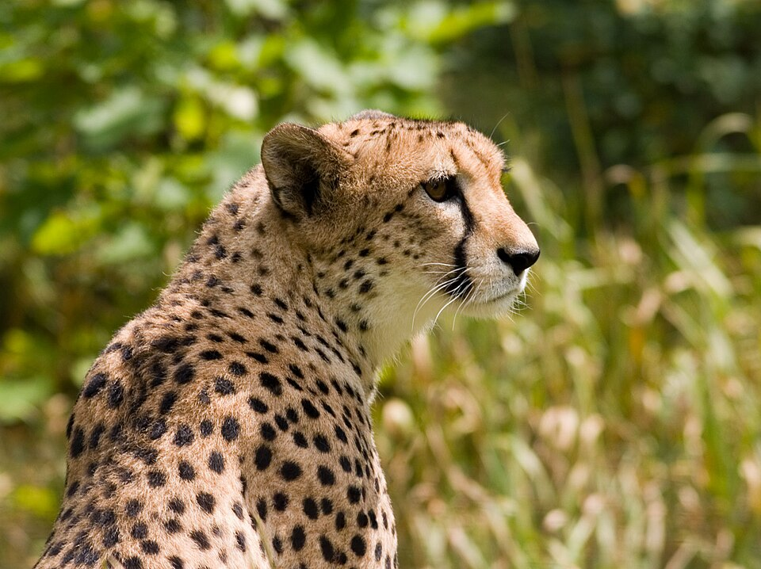
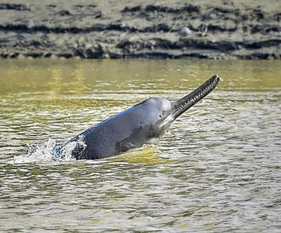

71st BPSC PYQNagi Bird Sanctuary (Jamui, Bihar): "Which organisation recognized the Nagi bird sanctuary Site as an Important Bird and Biodiversity Area (IBA)?" — answer: BirdLife International (not UNESCO/WWF). Nagi & Nakti (Jamui) later became Ramsar sites in 2024. BPSC loves the Bihar-wetland + international-recognition pairing.
71st BPSC PYQISFR 2023 Statement Question: "According to India State of Forest Report 2023 (ISFR 2023)…" — tested the exact forest + tree cover percentage (25.17%), top states by recorded forest area, and which state has maximum tree cover (Maharashtra). BPSC mines FRI Dehradun's report for precise numbers — memorise the Fact Matrix below.
71st BPSC PYQProject Tiger in Bihar: "Which of the following parks/sanctuaries come under the project tiger in Bihar?" — answer: Valmiki National Park (distractors: Udaypur WLS, Bhimbandh WLS). The 71st also asked the state animal of Bihar (Gaur) and where the temperate-forestry research institute sits (Himalayan Forest Research Institute, Shimla — trap: Dehradun, which hosts FRI).
69th BPSC PYQOceans & Vultures: "The 'Lisbon Declaration' is associated with the conservation of Oceans" (UN Ocean Conference 2022) — and "first State to launch a State-Level Committee for Vulture Conservation (SLCVC)" = Tamil Nadu. Also mined: IUCN definitions (Endangered = very high risk of extinction in the near future; Vulnerable = likely to become endangered) and sanctuary↔state matching (Gajner ↔ Rajasthan, Bhimbandh ↔ Bihar).
💡 Deep-dive ready: COP26 → COP32 host map, the COP28 vs COP29 vs COP30 decisions comparison table, and the "three Rio-convention COPs" you must not confuse:
Climate COPs Detail (COP28→30 Comparison) →
A. Climate COPs — COP29 Recap & COP30 Belém HOT
COP30 (Belém, Brazil, 10–22 Nov 2025) was billed as the "implementation COP". Learn the headline decisions cold — BPSC frames them as statement questions.
Decision Area
COP30 (Belém, Nov 2025) Outcome
Cover decision
"Mutirão" decision (named after the Brazilian collective-effort tradition) — 2-year climate finance work programme
Adaptation finance
Call to TRIPLE adaptation finance by 2035 (weakened from 2030, no baseline year fixed)
Global Goal on Adaptation
59 GGA indicators adopted (contentious; further revision due 2027); NAP assessment decision adopted
Fossil fuels
NO fossil-fuel transition roadmap despite 80+ country backing — Brazil to lead voluntary roadmaps on fossil fuels & deforestation
New initiatives
Belém Mission to 1.5 + Global Implementation Accelerator; Just Transition Mechanism agreed; Gender Action Plan adopted
Trade
3 dialogues on trade-restrictive unilateral measures (EU CBAM etc.)
Next hosts
COP31 → Antalya, Türkiye (2026) with Australia as "President of Negotiations" (pre-COP in the Pacific); COP32 → Ethiopia (2027) — first LDC host
COP29 (Baku, 11–24 Nov 2024) recap:NCQG = at least $300 bn/yr by 2035 for developing countries (replaces the $100 bn goal); call to scale to $1.3 tn/yr by 2035 from all actors ("Baku to Belém Roadmap"); Article 6 carbon markets fully operationalised; Loss & Damage Fund institutional setup completed.
India's anchors (static): Paris Agreement adopted 12 Dec 2015 (COP21); India's net-zero year 2070; Panchamrit (five nectar-elements incl. 500 GW non-fossil capacity, 50% energy from renewables) announced at COP26 Glasgow (2021).
B. Biodiversity COP16, High Seas Treaty & Plastics Talks VERIFIED JUL 2026
COP16 (CBD) — Cali, Colombia (Oct–Nov 2024) + resumed Rome session (25–27 Feb 2025): Cali suspended for lack of quorum (only 44/196 parties had filed updated NBSAPs). Rome "COP16.2" outcomes: ① Resource Mobilisation Strategy — path to $200 bn/yr by 2030 (incl. $20 bn international flows by 2025 → $30 bn by 2030); ② KMGBF Monitoring Framework adopted (headline indicators for 23 targets/4 goals); ③ financial mechanism decision (GEF guidance); ④ Cali Fund launched (with UNDP + UNEP) — private-sector benefit-sharing from Digital Sequence Information (DSI) on genetic resources.
KMGBF statics: Kunming-Montreal Global Biodiversity Framework, adopted COP15 Montreal, Dec 2022 — 4 goals, 23 targets; flagship "30×30" (Target 3): protect 30% of land and 30% of oceans by 2030. CBD itself = 1992 Rio Earth Summit.
UNOC3 (Nice, 9–13 Jun 2025) — 3rd UN Ocean Conference (co-hosts France & Costa Rica): Nice Ocean Action Plan; 56 BBNJ ratifications by conference close.
BBNJ (High Seas) Treaty: adopted 19 Jun 2023 under UNCLOS; hit 60 ratifications on 19 Sep 2025 (Morocco 60th, Sierra Leone 61st) → entered into force 17 Jan 2026 (120-day rule). Covers Areas Beyond National Jurisdiction ≈ 61% of the ocean; 4 pillars: marine genetic resources/benefit-sharing, area-based management tools incl. MPAs, environmental impact assessments, capacity-building/tech transfer. India: signed, not yet ratified (as of late 2025); first BBNJ COP due within a year of entry into force.
INC-5.2 plastics treaty (Geneva, 5–15 Aug 2025):collapsed without an agreed text — deadlock between binding virgin-plastic production caps (EU/High-Ambition Coalition) and a waste-management-only approach (oil-producing states); 2,600+ delegates, 183 countries. INC-5.3 (Feb 2026) elected Ambassador Julio Cordano (Chile) as new INC Chair; next negotiating session not yet scheduled as of mid-2026.
C. Flagship Reports — WMO & UNEP DATES + NUMBERS
WMO State of the Global Climate 2025 (released 23 Mar 2026): 2025 = second or third hottest year on record, ~+1.43 °C above 1850–1900 (±0.13°); 2024 remains the hottest; 2015–2025 = the 11 hottest years on record; Earth's energy imbalance at a record high (first year used as a key indicator); ocean heat content at record; sea level ~11 cm above 1993.
UNEP Emissions Gap Report 2025 — "Off Target" (4 Nov 2025, 16th edn.): full NDC implementation → 2.3–2.5 °C warming by 2100 (vs 2.6–2.8 °C in EGR 2024); current policies → 2.8 °C; 2024 GHG emissions 57.7 GtCO₂e (+2.3%); only 60 parties (63% of emissions) filed 2035 NDCs; 1.5 °C overshoot within a decade now unavoidable; India = largest absolute rise in emissions (growth 3.6%, second only to Indonesia in % terms).
D. India — Energy Milestone, Carbon Market, Forests, Species MAJOR
50% non-fossil milestone: India achieved 50% of cumulative installed electricity capacity from non-fossil sources in June 2025 — five years ahead of the 2030 NDC (Panchamrit) target; crossed 250 GW non-fossil in Aug 2025; Nov 2025: 262.74 GW non-fossil = 51.5% of 509.64 GW total; record 44.51 GW renewable energy added in 2025 (till Nov) vs 24.72 GW in the same period of 2024. Target: 500 GW non-fossil by 2030.
Carbon market (CCTS): Carbon Credit Trading Scheme notified 28 Jun 2023 (Ministry of Power) — administrator Bureau of Energy Efficiency (BEE), registry Grid Controller of India, regulator CERC; compliance obligations in force from FY 2025-26 (1 Apr 2025). Greenhouse Gas Emission Intensity (GEI) targets notified: Oct 2025 — aluminium, cement, chlor-alkali, pulp & paper (282 obligated entities); 13 Jan 2026 — petroleum refineries, petrochemicals, textiles, secondary aluminium (208 more) → 490 obligated entities in all; transitions from the old PAT scheme.
ISFR 2023 (18th edn., released 21 Dec 2024, FRI Dehradun) — still the latest as of 15 Jul 2026: forest + tree cover 25.17% (8,27,357 sq km) of geographical area; forest cover 7,15,343 sq km (21.76%); tree cover 3.41%. Gain vs ISFR 2021: forest +156 sq km, tree +1,289 sq km. (ISFR 2025/19th edn. not released as of mid-2026.) National Forest Policy target: 33%.
Green Hydrogen (pair with the 50% milestone): National Green Hydrogen Mission (approved Jan 2023, ₹19,744 crore) — target 5 MMT/yr green hydrogen by 2030, ~125 GW associated renewable capacity.

India's tiger story: 3,682 tigers (2022 census), 58 reserves (Mar 2026) — but 162 tiger deaths in 2025, with Madhya Pradesh (54) the worst. Image: Wikimedia Commons.
E. New Tiger Reserves & Project Cheetah COUNT = 58
Tiger statics: Project Tiger launched 1 Apr 1973 from Corbett with 9 reserves; NTCA = statutory body (Wildlife Protection Act 1972, §38V, 2006 amendment); 2022 census: 3,682 tigers, MP max (785). 162 tiger deaths in India in 2025 (MP 54, Uttarakhand 19).
Project Cheetah — status as of May–Jun 2026 (counts shift monthly — date-stamp any number): India total 57 cheetahs (May 2026) — Kuno NP (MP): 54 (17 free-ranging, 37 in soft bomas) + Gandhi Sagar WLS (Mandsaur–Neemuch, MP): 3; roughly 33 India-born (Jun-2026 tracker).
Botswana batch:9 cheetahs (6 female, 3 male) arrived Feb 2026 — third source country after Namibia (8, 17 Sep 2022) and South Africa (12, Feb 2023); two released to open forest on 10 May 2026 after quarantine. Gandhi Sagar activated as second site (first animals moved Apr 2025); Kuno–Gandhi Sagar–Mukundra (Raj) metapopulation corridor planned. Authority: NTCA under MoEFCC.
Cheetah statics: declared extinct in India 1952; Asiatic cheetah survives only in Iran; African cheetah IUCN status = Vulnerable.

The cheetah returned to India in 2022 (Kuno NP, MP) after 70 years of extinction; Botswana became the third African source country in Feb 2026. Image: Wikimedia Commons.
F. Ramsar Sites — Running Total & New Species 2025–26 BIHAR HEAVY
India's Ramsar running total: ~100 sites as of ~Jun 2026 — highest in Asia (TN 20 max, UP 13, then Punjab/Odisha/Bihar 6 each). Caution: designations between Nov 2025 and Jun 2026 (Siliserh, Kopra Jalashay, Chhari-Dhand, Shekha Jheel, Jai Prakash Narayan BS Ballia → the reported 100th) rest on coaching trackers — cross-check ramsar.org before quoting the exact national count in the exam hall. Bihar's own six are fully confirmed.
New Site(s)
State
Designated
Running Total
Sakkarakottai & Therthangal Bird Sanctuaries; Khecheopalri Wetland; Udhwa Lake
Jai Prakash Narayan Bird Sanctuary (Ballia) — reported 100th
UP
Jun 2026
→ ~100
Ramsar statics: Convention signed 1971 at Ramsar, Iran; in force in India 1 Feb 1982; India's first sites = Chilika (Odisha) & Keoladeo (Rajasthan), 1981; Indian sites on the Montreux Record = Keoladeo NP + Loktak Lake; largest Indian site = Sundarbans; smallest = Renuka (HP).
New species discovered in India (2025–26):Gegeneophis valmiki — blind caecilian (subterranean limbless amphibian), Valmiki Plateau, Satara dist., Maharashtra; ZSI-led team; journal Phyllomedusa; first new species in genus Gegeneophis in over a decade (Jan 2026). Drawida vazhania — new earthworm, Peechi-Vazhani WLS, Thrissur, Kerala (Zootaxa). New genus + species of harpacticoid copepod — Kavaratti lagoon, Lakshadweep (CUSAT, Jan 2026). Metadon ghorpadei & M. reemeri — two rare ant-fly species (Kerala/TN).
🧠 Mnemonic — Bihar's 6 Ramsar sites "K-N-N-G-U-G" Kanwar/Kabar Tal (Begusarai, 2020 — 1st) → Nagi & Nakti (Jamui, 2024) → Gokul Jalashay (Buxar, Sep 2025) + Udaipur Jheel (W. Champaran, Sep 2025) → Gogabeel (Katihar, Nov 2025 — 6th). Say it: "Ka-Na-Na — Go-U-Go" (one lake, twin Jamui sanctuaries, then the 2025 trio).
🧠 Mnemonic — The Climate-Finance Money Ladder "100 → 300 → 1.3" $100 bn/yr = old 2009 goal → $300 bn/yr by 2035 = COP29 Baku NCQG (developed → developing) → $1.3 tn/yr by 2035 = "Baku to Belém Roadmap" call on ALL actors. Biodiversity runs a parallel ladder: $200 bn/yr by 2030 (COP16.2 Rome) with intl flows $20 bn (2025) → $30 bn (2030).
In-principle (Centre) Oct 2024; Bihar govt approval Dec 2025; NTCA notification pending
as of Jun 2026
River dolphins (1st survey)
6,327 total — 6,324 Ganges + 3 Indus; WII-led under Project Dolphin; 8 states
released Mar 2025
🔶 Bihar Connection
🏛️ Bihar & Environment — The Safe BPSC Angle
Valmiki Tiger Reserve (W. Champaran): Bihar's only tiger reserve (Valmiki NP + Valmiki WLS, est. under §38V in 1994); tigers 8 (2010) → 54 (2022 census) — a >7× rise; sits on the India–Nepal border; the easternmost limit of Himalayan Terai forests in India; Gangetic Plains biogeographic zone. The 71st BPSC asked "which park comes under Project Tiger in Bihar" — answer Valmiki National Park.
Kaimur — second tiger reserve (proposed): Centre gave in-principle approval Oct 2024; Bihar govt approved the upgrade Dec 2025; revised proposal with NTCA; formal notification still pending as of Jun 2026; ~4× the area of VTR; tiger reintroduction planned. Trap: "Bihar has two notified tiger reserves" — false until notified.
Bihar's 6 Ramsar sites:Kanwar Lake/Kabar Tal (Begusarai, 2020 — Bihar's 1st; Asia's largest freshwater oxbow lake, key wintering site for migratory waterbirds incl. the bar-headed goose); Nagi & Nakti Bird Sanctuaries (Jamui, 2024 — Nagi is a BirdLife International IBA, 71st BPSC PYQ); Gokul Jalashay (Buxar, Sep 2025); Udaipur Jheel (W. Champaran, Sep 2025); Gogabeel Lake (Katihar, ~4 Nov 2025 — 6th; an oxbow between the Mahananda and the Ganga).
Vikramshila Gangetic Dolphin Sanctuary (Bhagalpur): India's only dolphin sanctuary (notified 1991; ~60 km Ganga stretch, Sultanganj–Kahalgaon). First comprehensive river-dolphin survey (released Mar 2025, WII-led under Project Dolphin 2020): 6,327 dolphins nationwide — 6,324 Ganges + 3 Indus across 8 states (Assam 635; next survey after ~4 years). National Dolphin Research Centre, Patna (inaugurated 4 Mar 2024); National Dolphin Day = 5 Oct (since 2022); Gangetic dolphin = National Aquatic Animal (2010).
Bihar floods (Oct 2025) & statics: extremely heavy rain in North Bihar + Nepal catchments — 385 mm/24h at Saraigarh Bhaptiyahi (Supaul); >300 mm in Supaul, Sitamarhi, W. Champaran; all 56 gates of Kosi Barrage (Birpur) opened, ~5 lakh cusecs released (5 Oct 2025). Statics: ~73.6% of Bihar is flood-prone; 29/38 districts flood-prone; Bihar holds 18% of India's flood-prone area on <3% of its land; Kosi, Gandak, Bagmati, Kamla-Balan, Mahananda, Ghaghra drain Nepal/Tibet catchments; Kosi = "Sorrow of Bihar" (ancient name Kaushiki).
Bihar state symbols (static): state animal Gaur (Indian bison); state bird house sparrow; state tree peepal — a 71st BPSC one-liner.

The Gangetic dolphin — National Aquatic Animal; Bihar hosts India's only dolphin sanctuary (Vikramshila, Bhagalpur) and the National Dolphin Research Centre (Patna). Image: Wikimedia Commons.
🔗 Cross-Topic Connections
↔ Topic #4 (Summits & Groupings): COP30 Belém also belongs to the summits page — G20/BRICS statements carry climate language; see its COP subpage too, but the COP28→30 comparison table on this topic's subpage is the exam-authoritative version. ↔ Topic #7 (Economy in News): CCTS carbon market (BEE/CERC/Grid Controller), EU CBAM trade dialogues at COP30, green hydrogen economics and the $300 bn NCQG all sit at the economy-environment seam. ↔ Topic #11 (Reports & Indices): WMO State of the Global Climate 2025 and UNEP Emissions Gap Report 2025 are "report ↔ publisher ↔ headline number" candidates. ↔ Topic #12 (Important Days): World Wetlands Day (2 Feb — Ramsar designations announced), World Environment Day (5 Jun, UNEP-led since 1973, marks 1972 Stockholm Conference), International Tiger Day (29 Jul), National Dolphin Day (5 Oct), Earth Day (22 Apr, first 1970). ↔ Topics #89, #90, #94 (Bihar Rivers / Climate / Forests & Wildlife): Kosi–Gandak–Bagmati flood dynamics, monsoon behaviour, and Valmiki TR statics overlap directly. ↔ Topics #150–154 (Environment Statics): ecosystem/food chain, biodiversity hotspots, climate-change basics, pollution, CITES/Ramsar conventions — the static theory behind every current-affairs question here. ↔ Topic #65 (National Symbols): Gangetic dolphin = National Aquatic Animal (2010); pair with national animal (tiger) for "which symbol" traps.
📰 Current Relevance & Potential Traps (2025–26 Cycle)
Near-certain one-liner: COP30 = Belém, Brazil (10–22 Nov 2025); cover decision "Mutirão"; adaptation finance to be tripled by 2035; 59 GGA indicators; and the trap — no fossil-fuel transition roadmap was agreed (Brazil leads voluntary roadmaps instead). Don't swap with Baku (COP29) or Dubai (COP28).
Host sequence forward: COP31 → Antalya, Türkiye (2026) with Australia as "President of Negotiations"; COP32 → Ethiopia (2027), first LDC host. Fresh bait for "next COP host" questions.
BBNJ arithmetic: adopted 19 Jun 2023 → 60th ratification 19 Sep 2025 (Morocco) → in force 17 Jan 2026 (120-day rule). India has signed but not ratified. High seas ≈ 61% of the ocean; four pillars (MGRs, ABMTs/MPAs, EIAs, capacity-building).
Ramsar running count trap: ~100 sites as of ~Jun 2026 per coaching trackers, but the intermediate 2026 designations await ramsar.org confirmation — in the exam, prefer Bihar's six confirmed sites and their districts over the national headline number. TN has the most sites (20).
Tiger numbers to keep straight: reserves = 58 (Madhav latest, Mar 2025); tigers = 3,682 (2022 census); deaths in 2025 = 162 (MP 54); VTR = 8 → 54 (2010 → 2022). BPSC swaps these four numbers into each other's slots.
Cheetah date-stamps: Botswana = 3rd source country (9 cheetahs, Feb 2026) after Namibia (Sep 2022) and South Africa (Feb 2023); India total 57 as of May 2026 (Kuno 54 + Gandhi Sagar 3). Extinct 1952; Asiatic cheetah only in Iran; African cheetah = IUCN Vulnerable.
India energy/carbon dates:50% non-fossil capacity in June 2025 (five years early; 262.74 GW = 51.5% by Nov 2025); CCTS compliance from FY 2025-26 with 490 obligated entities (Oct 2025: 282; Jan 2026: 208). Green Hydrogen target: 5 MMT/yr by 2030.
Report numbers: WMO — 2025 ≈ +1.43 °C, 2015–2025 eleven hottest; UNEP EGR — NDCs → 2.3–2.5 °C, policies → 2.8 °C, 2024 emissions 57.7 GtCO₂e, India = largest absolute rise. Trap: "2025 was the hottest year" — no, 2024 remains hottest.
Statics that never age: Ramsar Convention 1971 (Iran), India's first sites Chilika + Keoladeo (1981), Montreux Record = Keoladeo + Loktak, largest = Sundarbans, smallest = Renuka; Project Tiger 1 Apr 1973 (Corbett, 9 reserves); NTCA statutory under WLPA §38V (2006); Paris Agreement 12 Dec 2015; India net-zero 2070; KMGBF "30×30" = Target 3 (COP15 Montreal 2022).
✍️ MCQ Practice Set — 25 Questions (BPSC Level)
Q1. Which organisation recognized the Nagi Bird Sanctuary site (Jamui, Bihar) as an Important Bird and Biodiversity Area (IBA)? (71st BPSC pattern)
✅ Correct Answer: (B) — Important Bird and Biodiversity Areas are identified globally by BirdLife International. Nagi and neighbouring Nakti (both in Jamui, Bihar) also became Ramsar sites in 2024. UNESCO administers World Heritage Sites — the classic trap here.
Q2. According to the India State of Forest Report 2023 (ISFR 2023), the total forest AND tree cover of the country is what percentage of its geographical area? (71st BPSC pattern)
✅ Correct Answer: (C) — ISFR 2023 (18th edn., FRI Dehradun, released 21 Dec 2024): forest + tree cover = 25.17% (8,27,357 sq km). (A) is the trap — 21.76% (7,15,343 sq km) is forest cover alone; 24.62% was the ISFR 2021 figure; 33% is the National Forest Policy target.
Q3. Which of the following parks/sanctuaries comes under Project Tiger in Bihar? (71st BPSC pattern)
✅ Correct Answer: (A) — Valmiki NP (with Valmiki WLS) forms Valmiki Tiger Reserve in West Champaran — Bihar's only tiger reserve (tigers 8 in 2010 → 54 in 2022). Bhimbandh (Munger) and Udaypur are wildlife sanctuaries, not tiger reserves; Kaimur's upgrade (state approval Dec 2025) is still pending NTCA notification.
Q4. As per IUCN, species facing a very high risk of extinction in the near future are termed: (71st BPSC pattern)
✅ Correct Answer: (B) — "Endangered" = very high risk of extinction in the near future. (A) is the trap: "Vulnerable" species are only likely to become endangered if nothing is done. Risk ladder: Vulnerable → Endangered → Critically Endangered.
Q5. Which State first launched the State-Level Committee for Vulture Conservation (SLCVC), proposed under the national action plan for the protection of vultures in India? (69th BPSC pattern)
✅ Correct Answer: (C) — Tamil Nadu was the first State to constitute an SLCVC under the Action Plan for Vulture Conservation (Moyar valley / Nilgiris landscape is a key vulture habitat). The north-eastern options are distractors from the 69th BPSC paper itself.
Q6. The 'Lisbon Declaration' is associated with: (69th BPSC pattern)
✅ Correct Answer: (D) — The Lisbon Declaration came out of the 2022 UN Ocean Conference ("Our ocean, our future, our responsibility"). The ocean thread continues: UNOC3 at Nice (Jun 2025) and the BBNJ High Seas Treaty entering into force on 17 Jan 2026.
Q7. The Himalayan Forest Research Institute (HFRI), which handles temperate-forestry research under ICFRE, is located in which city? (71st BPSC pattern)
✅ Correct Answer: (A) — HFRI is at Shimla (Himachal Pradesh). (D) is the trap: Dehradun hosts the Forest Research Institute (FRI), which publishes the ISFR. Tropical forestry research sits at TFRI, Jabalpur.
Q8. Match List-I (Protected Area / Wetland) with List-II (State): (69th BPSC pattern)
a) Gajner Wildlife Sanctuary — 1) Sikkim
b) Bhimbandh Wildlife Sanctuary — 2) Rajasthan
c) Khecheopalri Wetland — 3) Bihar
✅ Correct Answer: (B) — Gajner WLS is in Rajasthan (Bikaner); Bhimbandh WLS is in Bihar (Munger); Khecheopalri is a sacred lake-wetland in Sikkim, designated a Ramsar site in Feb 2025. Sanctuary↔state matching is a recurring 69th/71st BPSC format.
Q9. Kanha National Park — among the first nine reserves brought under Project Tiger in 1973 — is located in: (71st BPSC pattern)
✅ Correct Answer: (D) — Kanha (Mandla–Balaghat districts, MP) inspired Kipling's "Jungle Book" country and is famous for the hard-ground barasingha. Project Tiger was launched on 1 Apr 1973 from Corbett with 9 reserves; MP today has the most tigers (785, 2022 census).
Q10. What is the state animal of Bihar? (71st BPSC pattern)
✅ Correct Answer: (A) — Bihar's state animal is the Gaur. Barasingha (D) is tied to Kanha/Dudhwa; the Asian elephant is the state animal of Jharkhand and Kerala. Pair with: state bird = house sparrow, state tree = peepal.
Q11. The COP30 climate conference (10–22 November 2025) was held at:
✅ Correct Answer: (D) — Belém, gateway to the Amazon, hosted COP30 (the "implementation COP"). Baku = COP29 (2024), Dubai = COP28 (2023), Sharm el-Sheikh = COP27 (2022) — the host sequence is the standard trap.
Q12. Consider the following statements about the outcomes of COP30 (Belém, 2025):
1. The "Mutirão" decision called for tripling adaptation finance by 2035.
2. 59 indicators for the Global Goal on Adaptation were adopted.
3. A binding, consensus roadmap to transition away from fossil fuels was adopted.
Which of the statements given above are correct?
✅ Correct Answer: (B) — Statements 1 and 2 are correct. Statement 3 is the trap: despite 80+ countries backing a fossil-fuel transition roadmap, none was agreed — Brazil will lead voluntary roadmaps on fossil fuels and deforestation outside the COP text.
Q13. The New Collective Quantified Goal (NCQG) agreed at COP29 (Baku, 2024) commits to mobilising at least:
✅ Correct Answer: (C) — NCQG = ≥$300 bn/yr by 2035, replacing the old $100 bn goal (A). (B) is the trap — $1.3 tn/yr by 2035 is the wider "Baku to Belém Roadmap" call on all actors, not the NCQG; $20 bn figures belong to biodiversity finance (COP16).
Q14. Consider the following statements about the BBNJ (High Seas) Treaty:
1. It was adopted on 19 June 2023 under UNCLOS.
2. It entered into force on 17 January 2026 after crossing 60 ratifications.
3. India has signed but not yet ratified it.
Which of the statements given above are correct?
✅ Correct Answer: (D) — All three are correct. Morocco's 60th ratification (19 Sep 2025) triggered the 120-day rule → entry into force 17 Jan 2026. The treaty covers Areas Beyond National Jurisdiction (~61% of the ocean) and rests on four pillars: marine genetic resources, area-based management tools/MPAs, EIAs, and capacity-building/tech transfer.
Q15. The 'Cali Fund', launched at the resumed COP16 session (Rome, February 2025), is associated with:
✅ Correct Answer: (B) — The Cali Fund (with UNDP + UNEP) channels private-sector DSI benefit-sharing — firms using genetic sequence data contribute to biodiversity conservation. COP16.2 (Rome) also adopted the KMGBF Monitoring Framework and a path to $200 bn/yr by 2030. (A) belongs to the UNFCCC track, not the CBD.
Q16. Gogabeel Lake, designated a Ramsar site in November 2025 and Bihar's 6th Ramsar site, is located in which district?
✅ Correct Answer: (C) — Gogabeel is an oxbow lake in Katihar district, between the Mahananda and the Ganga. The distractors are Bihar's other Ramsar districts: Begusarai = Kanwar/Kabar Tal (2020); Jamui = Nagi & Nakti (2024); Buxar = Gokul Jalashay (Sep 2025).
Q17. With the notification of Madhav National Park (Madhya Pradesh) in March 2025, the total number of tiger reserves in India became:
✅ Correct Answer: (D) — Madhav NP (Shivpuri, MP) is the 58th tiger reserve; the 56th was Guru Ghasidas–Tamor Pingla (Chhattisgarh, Nov 2024 — India's 3rd-largest at 2,829.38 sq km) and the 57th Ratapani (MP, Dec 2024). Madhav contains the Sakhya Sagar Ramsar site — a favourite two-in-one fact.
Q18. In February 2026, nine cheetahs that arrived in India under Project Cheetah were sourced from:
✅ Correct Answer: (C) — Botswana (9 cheetahs: 6 female, 3 male) became the third source country after Namibia (8, Sep 2022) and South Africa (12, Feb 2023). As of May 2026 India had 57 cheetahs — 54 at Kuno NP and 3 at Gandhi Sagar WLS (both MP); two Botswana animals entered the open forest on 10 May 2026.
Q19. India achieved 50% of its cumulative installed electricity capacity from non-fossil sources in:
✅ Correct Answer: (C) — The 50% non-fossil milestone came in June 2025, five years ahead of the Panchamrit/NDC target. By Nov 2025 non-fossil capacity stood at 262.74 GW (51.5% of 509.64 GW); the 2030 goal is 500 GW non-fossil. (A) is internally absurd — the deadline is 2030, so a 2026 achievement can't be "late".
Q20. Under India's Carbon Credit Trading Scheme (CCTS), whose compliance obligations took effect from FY 2025-26, the designated administrator is:
✅ Correct Answer: (B) — BEE administers the CCTS (notified 28 Jun 2023, Ministry of Power). The traps swap roles: CERC is the regulator of the carbon market and the Grid Controller of India is the registry. 490 obligated entities are now covered (282 in Oct 2025 + 208 in Jan 2026).
Q21. The WMO State of the Global Climate 2025 report (released 23 March 2026) concluded that:
✅ Correct Answer: (B) — 2024 remains the hottest year (trap A); La Niña did not stop 2025 from ranking second/third hottest (trap C); and Earth's energy imbalance hit a record high, not low (trap D inverted). Ocean heat content also set a record; sea level is ~11 cm above 1993.
Q22. Which statement about Kaimur (Bihar) and India's tiger-reserve list is correct?
✅ Correct Answer: (C) — Kaimur's upgrade is approved at state level but NOT yet notified — so Bihar still has only one notified tiger reserve (Valmiki TR). (A) misassigns the 58th slot, which belongs to Madhav NP (MP); (D) is false — the proposal is with NTCA, not rejected. Kaimur TR will be ~4× the area of VTR.
Q23. Kanwar Lake (Kabar Tal, Begusarai) is best described as:
✅ Correct Answer: (A) — Kanwar/Kabar Tal is Asia's largest freshwater oxbow lake and a key wintering ground for migratory waterbirds (incl. bar-headed geese); it became Bihar's first Ramsar site in 2020. (B) is the trap — Wular (J&K) is India's largest freshwater lake; (C) describes Gogabeel (Nov 2025); India's Montreux Record sites are Keoladeo NP and Loktak Lake, not Kanwar.
Q24. What was the outcome of the INC-5.2 session (Geneva, August 2025) on the proposed global plastics treaty?
✅ Correct Answer: (D) — INC-5.2 collapsed over the core split: binding caps on virgin-plastic production (EU/High-Ambition Coalition) vs a waste-management-only approach (oil-producing states). (B) reverses the sequence — INC-5 at Busan (Dec 2024) had already adjourned without a deal; (C) mixes up the Cali Fund, which is about biodiversity DSI. INC-5.3 (Feb 2026) elected Julio Cordano (Chile) as the new chair.
Q25. India's first comprehensive river-dolphin survey (released March 2025, WII-led under Project Dolphin) estimated the national river-dolphin population at:
✅ Correct Answer: (A) — 6,327 total: 6,324 Ganges-system + just 3 Indus dolphins, across 8 states (Assam 635 was the state tally, not the Indus count — trap D). (B) is the cross-number trap: 3,682 is India's 2022 tiger census. The Gangetic dolphin is the National Aquatic Animal; Bihar hosts the Vikramshila sanctuary and the National Dolphin Research Centre, Patna.